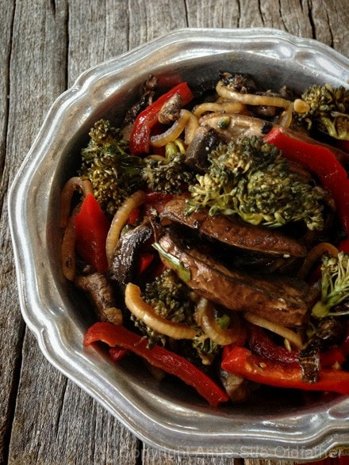
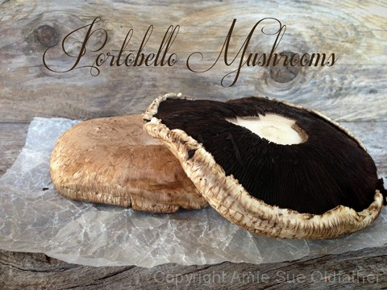
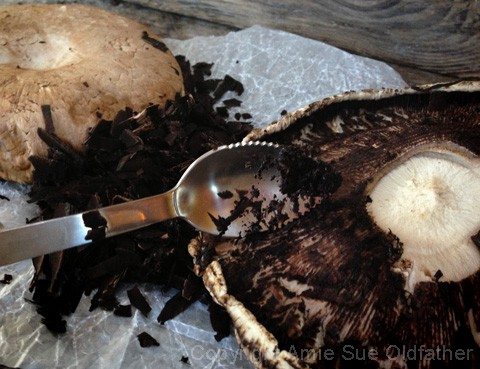

Marinated “Grilled” Vegetable and Mushrooms

~ raw, vegan, gluten-free, nut-free ~
I love marinating raw veggies. They can really elevate a dish… textually and visually. There are a few key elements when making raw “grilled” veggies. An acid and a salt are needed in the ingredients to help break down the cell walls of the veggies.
In this case, I used Tamari as the salt and white wine vinegar as the acid. You can use raw apple cider vinegar instead. And in a pinch, lemon juice will work.
The next element is heat or time. To speed the marinating process you can place the veggies in a zip-lock bag or a glass container and place it in the dehydrator to warm. If you don’t have a dehydrator, time is your next tool. Place the mixture in the fridge overnight. Bring to room temperature before serving.
I have fooled a many with this “raw technique”, so should you give it a try, don’t tell others that it is raw when serving it. See if they can tell. The volume that this recipe yields will vary, depending on the size of veggies used and the amount of water content in them. Enjoy!
Ingredients:
Yields about 4-5 cups
Marinade:
- 1/2 cup gluten-free Tamari
- 2/3 cup water
- 1/4 cup white wine vinegar
- 1″ minced fresh ginger
- 2 small garlic cloves, minced
- 1 tsp maple syrup
- 1/2 tsp fresh cracked black pepper
Vegetables:
- 2 large Portobello mushrooms, sliced into strips
- 2 cups broccoli florets
- 1 red bell pepper, thinly sliced
- 1 small red onion, thinly sliced
Preparation:
Marinade:
- In a gallon-sized ziplock bag or a glass container (that will fit in the dehydrator) mix together the Tamari, water, vinegar, ginger, garlic, maple syrup, and black pepper.
Vegetables:
- Use the tip of a spoon to remove the gills from the underside of the mushroom.
- Be gentle and just slightly scrape them away. Discard the gills.
- If you prefer, you can leave the gills on but I find they “muddy” my recipes.
- Portobellos are large, flat mushrooms. I cut mine into strips and then made one cut in the opposite directions to break them down into bite-sized pieces.
- Cut the broccoli florets into bite-sized pieces.
- Don’t use the stalks, they are too fibrous for the marinade. You can save the stalks to chop up in a fresh salad or put through them your juicer. There is a lot of nutrition the stalks so don’t waste them.
- As indicated in the ingredients list, thinly slice the red pepper and onion.
- Tip: The thinner the slices are in the veggies, the better they are for a raw marinade to soften them and give them that cooked appearance.
- Add the veggies to the container of choice and lightly massage everything together.
- Place flat in the dehydrator at 115 degrees (F) for 4-6 hours or until soft.
- If you use a bag, be sure that it is sealed so it doesn’t leak in the dehydrator. Read above if you don’t have a dehydrator.
- Store in an airtight container in the fridge for 3-5 days.


© AmieSue.com